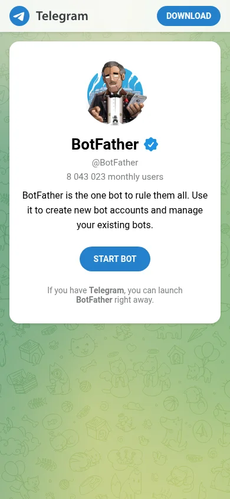

Бот для заявок с сайта Анжелы – с телефона
permanentbogatyryova.ru · 6 шагов, около 5 минут · всё делается в приложении Telegram на телефоне
Откройте @BotFather на телефоне
Нажмите кнопку ниже прямо с телефона. Откроется страница бота – нажмите START BOT, и телефон перекинет в приложение Telegram.

Настоящий экран телефона. Синяя галочка у имени – это официальный бот Telegram.
В Telegram нажмите «Запустить»
Откроется чат с BotFather. Внизу экрана вместо поля для текста – большая кнопка «Запустить» (на английском – «Start»). Нажмите её.
Схема экрана приложения.
Напишите /newbot, потом имя и адрес бота
BotFather пришлёт список команд. В поле сообщения напишите /newbot и отправьте. Он задаст два вопроса:
- Имя – как бот будет называться в чатах:
Заявки с сайта - Адрес – латиницей, без пробелов, в конце
bot:website_leads1_bot
Схема переписки. BotFather отвечает по-английски – это нормально.
website_leads3_bot.Скопируйте токен – нажмите на него
Придёт сообщение «Done! Congratulations…». В нём длинный ключ после строки «Use this token to access the HTTP API». Просто коснитесь ключа – Telegram скопирует его и покажет «Скопировано».
Схема. Ключ на картинке – пример, у вас будет свой.
/revoke выдаст новый.Анжела открывает бота и жмёт «Запустить»
Бот не может написать человеку первым. Перешлите Анжеле ссылку на бота из сообщения BotFather (t.me/website_leads1_bot). Она открывает её на своём телефоне и один раз нажимает «Запустить». Всё, можно закрыть.
Схема. Хотите получать копии заявок сами – тоже нажмите «Запустить» в этом боте.
Пришлите Claude
- Токен из шага 4 – просто вставьте в чат.
- Адрес бота – например,
@website_leads1_bot. - Словами: «Анжела нажала Запустить» (и «я тоже», если нужны копии).
Дальше всё делает Claude: находит чат Анжелы, прописывает бота на сервере сайта и отправляет ей проверочное «Бот заявок подключён». Пришло – значит работает.
Так заявка придёт Анжеле
Пример. Если человек оставил телефон – вместо ника будет номер.